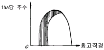

산림산업기사 (2008-07-27 기출문제)
1과목: 조림학
1. 소나무림의 임간 나지에서는 소나무의 어린나무가 거의 생장할 수 없는 이유는?(문제 오류로 정답이 정확하지 않습니다. 정답지를 찾지 못하여 임의 정답 1번으로 설정하였습니다. 정답을 아시는 분께서는 오류 신고를 통하여 정답 입력 부탁 드립니다.)
- 자연환경에 적응력이 적으므로
- 어미나무의 뿌리가 땅속에 엉켜서 땅힘이 없으므로
- 강한 양수 이므로
- 토양수분이 적으므로
(정답률: 88%)

2. 목재를 구성하는 성분 중 가장 많은 것은?(문제 오류로 정답이 정확하지 않습니다. 정답지를 찾지 못하여 임의 정답 1번으로 설정하였습니다. 정답을 아시는 분께서는 오류 신고를 통하여 정답 입력 부탁 드립니다.)
- 수지
- 셀룰로스
- 리그닌
- 녹말
(정답률: 50%)
3. 다음 설명 중 채종림의 선종기준으로 부적합한것은?(문제 오류로 정답이 정확하지 않습니다. 정답지를 찾지 못하여 임의 정답 1번으로 설정하였습니다. 정답을 아시는 분께서는 오류 신고를 통하여 정답 입력 부탁 드립니다.)
- 1단지 면적이 1ha 이상이고 모수가 150본 이상되는 산림
- 분지 상태가 용호하며 가지가가늘고 자연낙지가 잘된 산림
- 벌채나 도ㆍ남벌이 적은산림
- 보호관리 및 채종작업이 편리한 산림
(정답률: 92%)
4. 산성인 묘포 토양의 산도 조절을 위해서 가장 효과적인 것은?(문제 오류로 정답이 정확하지 않습니다. 정답지를 찾지 못하여 임의 정답 1번으로 설정하였습니다. 정답을 아시는 분께서는 오류 신고를 통하여 정답 입력 부탁 드립니다.)
- N
- P
- K
- Ca
(정답률: 36%)
5. 그림과 같은 구성을 보이는 동령임분에서 빗금친 부분을 간벌하였다면 어떠한 간벌 방식이 적용된 것인가?(문제 오류로 정답이 정확하지 않습니다. 정답지를 찾지 못하여 임의 정답 1번으로 설정하였습니다. 정답을 아시는 분께서는 오류 신고를 통하여 정답 입력 부탁 드립니다.)

- 하층간벌
- 상층간벌
- 택벌식 간벌
- 기계적 간벌
(정답률: 88%)
6. 나무의 고사상태를 알고 맹아력을 감소시키기 위해 실시하는 제벌은 어느시기가 가장 적합한가?(문제 오류로 정답이 정확하지 않습니다. 정답지를 찾지 못하여 임의 정답 1번으로 설정하였습니다. 정답을 아시는 분께서는 오류 신고를 통하여 정답 입력 부탁 드립니다.)
- 봄
- 여름
- 가을
- 겨울
(정답률: 59%)
7. 종자의 발아율 조사를 위해서 테트라졸륨 용액에 종자를 넣으면 활력이 있는 부위의 색깔은?
- 푸른색
- 붉은색
- 검정색
- 변하지 않는다.
(정답률: 65%)
8. 가지치기의 설명으로 옳은 것은?(문제 오류로 정답이 정확하지 않습니다. 정답지를 찾지 못하여 임의 정답 1번으로 설정하였습니다. 정답을 아시는 분께서는 오류 신고를 통하여 정답 입력 부탁 드립니다.)
- 역지 이상부의 가지는 끊어도 된다.
- 활엽수 가지치기에서 직경이 5 cm 이상이 되어도 반드시 가지치기를 한다.
- 가지가 나무줄기와 직각으로 붙어있는 것의 가지치기는 절단면을 줄기에 평행하도록 하고 이때 줄기의 껍질을 벗기는 일이 없도록 한다.
- 가지의 기부가 굵은 활엽수의 가지치기를 실시할 경우 지융부는 남겨두지 않는다.
(정답률: 65%)
9. 일반적으로 나무가 살아가고 수풀을 이루는데 가장 큰 영향을 끼치는 조건은?(문제 오류로 정답이 정확하지 않습니다. 정답지를 찾지 못하여 임의 정답 1번으로 설정하였습니다. 정답을 아시는 분께서는 오류 신고를 통하여 정답 입력 부탁 드립니다.)
- 토양의 물리적인 인자
- 인간의 영향
- 기후의 인자
- 토양의 비옥도
(정답률: 77%)
10. 종자의 검사기준 공식으로 틀린 것은?(문제 오류로 정답이 정확하지 않습니다. 정답지를 찾지 못하여 임의 정답 1번으로 설정하였습니다. 정답을 아시는 분께서는 오류 신고를 통하여 정답 입력 부탁 드립니다.)
- 순량률 = (순정종자무게 / 전체시료무게)× 100
- 효율 =(발아율 × 순량률 ) /100
- 용적중 = 100 mL 에 대한 무게를 그램단위로 나타낸 것
- 실중= 그램단위로 나타내며, 굵은 종자는 100립, 4 반복의 무게를 측정해서 그 평균치로 1000립 종으로 환산하고, 소립종자는 1000립, 4반복의 평균치로 한다,
(정답률: 62%)
11. 삽목 발근율 높이는 요인으로 적합하지 못한 것은?(문제 오류로 정답이 정확하지 않습니다. 정답지를 찾지 못하여 임의 정답 1번으로 설정하였습니다. 정답을 아시는 분께서는 오류 신고를 통하여 정답 입력 부탁 드립니다.)
- 삽수는 질소 함량에 비하여 탄수화물의 함량이 많을수록 좋다.
- 전나무와 리기다소나무는 생육이 왕성한 주지보다 측지의 발근율이 좋다.
- 모수의 연령은 어린것보다 늙은것이 좋다.
- 삽목상은 보수력이 높은 동시에 배수가 잘되고 통기력이 좋으며 무균적이어야 한다.
(정답률: 54%)
12. 토양 입단구조의 설명으로 옳은 것은?(문제 오류로 정답이 정확하지 않습니다. 정답지를 찾지 못하여 임의 정답 1번으로 설정하였습니다. 정답을 아시는 분께서는 오류 신고를 통하여 정답 입력 부탁 드립니다.)
- 사질 토양에서 흔히 볼 수 있다.
- 유기물이 없는 토양에서 잘 형성된다.
- 보수성과 통기성이 좋은 토양이다.
- 강우 직후에 수분이 포함된 토양을 단단히 밟아주면 잘 형성된다.
(정답률: 62%)
13. 다음 수종 가운데 풍매화가 아닌 것은?(문제 오류로 정답이 정확하지 않습니다. 정답지를 찾지 못하여 임의 정답 1번으로 설정하였습니다. 정답을 아시는 분께서는 오류 신고를 통하여 정답 입력 부탁 드립니다.)
- 호도나무
- 자작나무
- 포플러류
- 피나무
(정답률: 59%)
14. 다음 온도, 위도, 고도 등과 산림한계의 설명가운데 잘못된 것은?(문제 오류로 정답이 정확하지 않습니다. 정답지를 찾지 못하여 임의 정답 1번으로 설정하였습니다. 정답을 아시는 분께서는 오류 신고를 통하여 정답 입력 부탁 드립니다.)
- 북반구의 산림한계선에서 가장 많이 발견되는 수종은 소나무과로서 소나무속, 가문비나무속, 젓나무속 등이다.
- 우리나라의 고산지대에는 주목, 눈잣나무, 구상나무등이 자라며 백두산에는 분비나무, 가문비 나무 등이 자란다.
- 북반구에서 가장 북쪽에 위치한 산림은 온대림이다.
- 고산지역의 수목한계선은 적설량, 적설기간, 바람, 산불등의 환경요인에 의해 결정되는 경우도 있으나 대부분의 경우는 온도와 관련된 탄소 균형에 의하여 제한을 받는다.
(정답률: 67%)
15. 시비를 하는 시기로 적당하지 않은 것은?(문제 오류로 정답이 정확하지 않습니다. 정답지를 찾지 못하여 임의 정답 1번으로 설정하였습니다. 정답을 아시는 분께서는 오류 신고를 통하여 정답 입력 부탁 드립니다.)
- 초봄
- 늦봄
- 늦여름
- 늦가을
(정답률: 50%)
16. 파종한 해에 해가림 시설을 해주지 않아도 되는 것은?(문제 오류로 정답이 정확하지 않습니다. 정답지를 찾지 못하여 임의 정답 1번으로 설정하였습니다. 정답을 아시는 분께서는 오류 신고를 통하여 정답 입력 부탁 드립니다.)
- 곰솔
- 전나무
- 낙엽송
- 가문비나무
(정답률: 67%)
17. 다음 탄수화물이 하는 역활이 아닌 것은?(문제 오류로 정답이 정확하지 않습니다. 정답지를 찾지 못하여 임의 정답 1번으로 설정하였습니다. 정답을 아시는 분께서는 오류 신고를 통하여 정답 입력 부탁 드립니다.)
- 세포벽의 주요 성분
- 에너지를 저장하는 역활
- 광합성으로 만들어진 물질
- 주로 2차 대사물의 역활
(정답률: 57%)
18. 일단 부식시키고 모래를 섞어서 마찰하여 분리하는 방법으로 탈종하는 수종은?(문제 오류로 정답이 정확하지 않습니다. 정답지를 찾지 못하여 임의 정답 1번으로 설정하였습니다. 정답을 아시는 분께서는 오류 신고를 통하여 정답 입력 부탁 드립니다.)
- 향나무
- 박태기나무
- 오리나무
- 옻나무
(정답률: 65%)
19. 묘포지의 작상설치에관한 설명으로 가장 거리가 먼 것은?(문제 오류로 정답이 정확하지 않습니다. 정답지를 찾지 못하여 임의 정답 1번으로 설정하였습니다. 정답을 아시는 분께서는 오류 신고를 통하여 정답 입력 부탁 드립니다.)
- 작상은1m 폭의 정방형으로 한다.
- 상면은 보도면보다15㎝ 가량 높게 한다.
- 상간의 보도폭은30 ~ 50 ㎝ 내외로 한다.
- 상면은 수평으로 평탄하게 한다.
(정답률: 64%)
20. 다음 중 낙엽성의 나자식물인 수종은?(문제 오류로 정답이 정확하지 않습니다. 정답지를 찾지 못하여 임의 정답 1번으로 설정하였습니다. 정답을 아시는 분께서는 오류 신고를 통하여 정답 입력 부탁 드립니다.)
- 은행나무
- 주목
- 벚나무
- 무궁화
(정답률: 77%)
2과목: 산림보호학
21. 다음 중 나무의 종실을 가해하는 해충은?
- 탠트나방
- 솔노랑잎벌
- 애소나무좀
- 복숭아명나방 유충
(정답률: 79%)
22. 산림 해충의임업적 방제법으로 타당하지 않은 것은?
- 임지 및 품종선택
- 임목의 밀도조절
- 가능한 한해충이 발생하기 어려운 조건의 산림구성
- 훈증
(정답률: 77%)
23. 응애류를 방제하기위한 농약은?(문제 오류로 정답이 정확하지 않습니다. 정답지를 찾지 못하여 임의 정답 1번으로 설정하였습니다. 정답을 아시는 분께서는 오류 신고를 통하여 정답 입력 부탁 드립니다.)
- 살비제
- 살서제
- 살충제
- 살균제
(정답률: 71%)
24. 수목의 토양 전염병으로 맞는 것은?
- 대추나무 빗자루병
- 뿌리혹병
- 삼나무 붉은 마름병
- 소나무 혹병
(정답률: 59%)
25. 다음 중 모잘록 병균이 아닌 것은?
- Pythilm debaryanum
- Phytophthora cactorlm
- Rosel linia necatrix
- Rhizocatonia sotani
(정답률: 43%)
26. 나무줄기를 1 ~2 m로 잘라 임내에 놓아두고 이에 산란을 유도한 다음, 후에 이를 제거해 소각하는 유살법은 다음의 어느 곤충을 구제하기 위한 것인가?
- 솔잎혹파리
- 소나무좀
- 미류재주나방
- 밤바구미
(정답률: 47%)
27. 다음 용어 가운데 의미가 다른 하나는?
- 진균
- 사상균
- 세균
- 곰팡이
(정답률: 38%)
28. 오동나무 빗자루병의 병원은?
- 곰팡이
- 바이러스
- 피아토 플라스마
- 영양장해
(정답률: 75%)
29. 미국 흰불나방을 구제하기위해 물 20L에 디프수화제 80%를 1%의 농도로 희석코자한다, 사용할 약량응 몇 g인가?(문제 오류로 정답이 정확하지 않습니다. 정답지를 찾지 못하여 임의 정답 1번으로 설정하였습니다. 정답을 아시는 분께서는 오류 신고를 통하여 정답 입력 부탁 드립니다.)
- 10g
- 15g
- 20g
- 25g
(정답률: 36%)
30. 해충의 중요도를 나타내는 기준과관계가 적은 것은?(문제 오류로 정답이 정확하지 않습니다. 정답지를 찾지 못하여 임의 정답 1번으로 설정하였습니다. 정답을 아시는 분께서는 오류 신고를 통하여 정답 입력 부탁 드립니다.)
- 가해양식
- 분류위치
- 번식력
- 서식밀도
(정답률: 40%)
31. 아카시나무 모자이크병 바이러스의 판별기준은?
- 송이풀
- 향나무
- 계오동
- 명아주
(정답률: 65%)
32. 당년에 자란 산초에만 발생하는 수병은?(문제 오류로 정답이 정확하지 않습니다. 정답지를 찾지 못하여 임의 정답 1번으로 설정하였습니다. 정답을 아시는 분께서는 오류 신고를 통하여 정답 입력 부탁 드립니다.)
- 소나무의 잎녹병
- 낙엽송의 가지마름병
- 대추나무빗자루병
- 낙엽송의잎떨림병
(정답률: 50%)
33. 다음 중 일반적인 진딧물류의 생활사가 아닌 것은?
- 알로 월동한다.
- 여름에는 단위생식에 의하여 번식한다.
- 가을에 암컷과 수컷이 출현한다.
- 진딧물 밀도가 높을 때에는 날개가 없는 개체가 많이 출현한다.
(정답률: 38%)
34. 야생동물 서식의 필수구성요소에 해당하지 않는 것은?
- 먹이
- 피난처
- 물
- 계절
(정답률: 57%)
35. 묘목을 가해하는 해충류가 아닌 것은?(문제 오류로 정답이 정확하지 않습니다. 정답지를 찾지 못하여 임의 정답 1번으로 설정하였습니다. 정답을 아시는 분께서는 오류 신고를 통하여 정답 입력 부탁 드립니다.)
- 메뚜기과
- 비단별레과
- 방아벌레과
- 깍지벌레과
(정답률: 69%)
36. 다음 중 염풍에 저항력이 가장 약한 수종은?
- 소나무,
- 향나무
- 사철나무
- 자귀나무
(정답률: 24%)
37. 다음 중 천연기념물에 속하지 않는 조류는?
- 크낙새
- 고니
- 흑비둘기
- 붉은머리 오목눈이
(정답률: 48%)
38. 소나무 앞떨림병의 병원균이 월동하는 곳은?
- 땅위에 떨어진 병든잎
- 소나무 뿌리
- 소나무 줄기
- 중간기주
(정답률: 85%)
39. 늦서리에 대한 설명 중 옳지 않은 것은?
- 상륜이 생기는 경우가 있다.
- 이른 봄에 주로 발생 한다.
- 식물의 발육이 시작되기전에 급격한 온도저하가 일어나면 발생 한다.
- 임목의 수세를 약화시킨다 .
(정답률: 30%)
40. 육묘장에서 감염된 수목병이 조림지로 이식되어 피해가 발생된 것이 아닌 것은?(문제 오류로 정답이 정확하지 않습니다. 정답지를 찾지 못하여 임의 정답 1번으로 설정하였습니다. 정답을 아시는 분께서는 오류 신고를 통하여 정답 입력 부탁 드립니다.)
- 잣나무털녹병
- 밤나무 줄기마름병
- 대추나무 빗자루병
- 참나무 붉은별무늬병
(정답률: 50%)
3과목: 임업경영학
41. 수고측정에서 삼각법을 응용한 수고 측정기는?
- 와이제이 측고기
- 아소스 측고기
- 크리스톤측고기
- 불루메리아스 측고기
(정답률: 57%)
42. 벌구식 택벌작업급에 있어서 택벌구가 일순 택벌된 다음 다시 최초의 택벌구로 벌채할 때까지 소요되는 기간은?(문제 오류로 정답이 정확하지 않습니다. 정답지를 찾지 못하여 임의 정답 1번으로 설정하였습니다. 정답을 아시는 분께서는 오류 신고를 통하여 정답 입력 부탁 드립니다.)
- 윤벌기
- 회귀년
- 갱신기
- 벌기령
(정답률: 42%)
43. 다음과 같은 이령림 임지의 임령을 계산하면? (단, 30년생 나무가 20주, 35년생 나무가 10주, 40년생 나무가 10주, 45년생 나무가 10주)(문제 오류로 정답이 정확하지 않습니다. 정답지를 찾지 못하여 임의 정답 1번으로 설정하였습니다. 정답을 아시는 분께서는 오류 신고를 통하여 정답 입력 부탁 드립니다.)
- 35년
- 36년
- 37년
- 38년
(정답률: 43%)
44. 통나무 재적을 산출할 때 과대치를 주는 식은?(문제 오류로 정답이 정확하지 않습니다. 정답지를 찾지 못하여 임의 정답 1번으로 설정하였습니다. 정답을 아시는 분께서는 오류 신고를 통하여 정답 입력 부탁 드립니다.)
- Smal lan식
- Riecka식
- 말구직경 자승법
- 평균작경법
(정답률: 55%)
45. 다음 감가상각비 계산방법 중 시일이 경과할수록 부담이 커지는 결점을 갖고 있는 것은?(문제 오류로 정답이 정확하지 않습니다. 정답지를 찾지 못하여 임의 정답 1번으로 설정하였습니다. 정답을 아시는 분께서는 오류 신고를 통하여 정답 입력 부탁 드립니다.)
- 정액법
- 정률법
- 연수 합계법
- 작업시간 비례법
(정답률: 45%)
46. 고정자산에 속하는 것은?(문제 오류로 정답이 정확하지 않습니다. 정답지를 찾지 못하여 임의 정답 1번으로 설정하였습니다. 정답을 아시는 분께서는 오류 신고를 통하여 정답 입력 부탁 드립니다.)
- 묘목
- 임목
- 종자
- 비료
(정답률: 알수없음)
47. 해마다 균등한 수확을 할 수 있도록 각영급의 면적을 동일하게 한 법정상태의 요건은?(문제 오류로 정답이 정확하지 않습니다. 정답지를 찾지 못하여 임의 정답 1번으로 설정하였습니다. 정답을 아시는 분께서는 오류 신고를 통하여 정답 입력 부탁 드립니다.)
- 볍정영급 분배
- 법정임분배치
- 법정생장
- 법정 축적
(정답률: 62%)
48. 임목생산에 들어간 원리합계를 무엇이라 부르는가?(문제 오류로 정답이 정확하지 않습니다. 정답지를 찾지 못하여 임의 정답 1번으로 설정하였습니다. 정답을 아시는 분께서는 오류 신고를 통하여 정답 입력 부탁 드립니다.)
- 육림비
- 노동비
- 감가 상각비
- 지대
(정답률: 78%)
49. 산림평가의 관계있는 임업경영 요소가 아닌 것은?(문제 오류로 정답이 정확하지 않습니다. 정답지를 찾지 못하여 임의 정답 1번으로 설정하였습니다. 정답을 아시는 분께서는 오류 신고를 통하여 정답 입력 부탁 드립니다.)
- 수익
- 비용
- 이율
- 기술
(정답률: 58%)
50. 산림개황에 대한 조사시 조사항목으로 가장 거리가 먼 것은?(문제 오류로 정답이 정확하지 않습니다. 정답지를 찾지 못하여 임의 정답 1번으로 설정하였습니다. 정답을 아시는 분께서는 오류 신고를 통하여 정답 입력 부탁 드립니다.)
- 산림의 지리적 위치, 지세, 경계
- 소유자의 종류
- 기상관계의 개사
- 소유규모 및 관리경영의 연혁
(정답률: 42%)
51. 편기 생장의 원인으로 가장 거리가 먼 것은?(문제 오류로 정답이 정확하지 않습니다. 정답지를 찾지 못하여 임의 정답 1번으로 설정하였습니다. 정답을 아시는 분께서는 오류 신고를 통하여 정답 입력 부탁 드립니다.)
- 주풍
- 산지의 경사
- 임목도
- 수종
(정답률: 72%)
52. 복원중(문제 오류로 문제 내용이 정확하지 않습니다. 정확한 내용을 아시는분께서는 오류신고를 통하여 내용 작성 부탁 드립니다. 정답은 1번으로 임의 설정하였습니다.)
- 복원중(정확한 보기내용을 아시는분께서는 오류 신고를 통하여 보기 내용 작성 부탁드립니다.)
- 복원중(정확한 보기내용을 아시는분께서는 오류 신고를 통하여 보기 내용 작성 부탁드립니다.)
- 복원중(정확한 보기내용을 아시는분께서는 오류 신고를 통하여 보기 내용 작성 부탁드립니다.)
- 복원중(정확한 보기내용을 아시는분께서는 오류 신고를 통하여 보기 내용 작성 부탁드립니다.)
(정답률: 62%)
53. 작업급의 윤벌기가 갱신기 2년을 포함하여 92년이다, 하나의 영급의 기간을 20년으로 하는경우 완전 영급수는 몇 개 인가?(문제 오류로 정답이 정확하지 않습니다. 정답지를 찾지 못하여 임의 정답 1번으로 설정하였습니다. 정답을 아시는 분께서는 오류 신고를 통하여 정답 입력 부탁 드립니다.)
- 5개
- 4개
- 3개
- 2개
(정답률: 64%)
54. 임목 수고를 측정하는데 측고기를 이용 한다, 수고를 측정할 때 일정한 길이(예,2m 혹은 3m)의 폴과 함께 사용하는 측고기는 무엇인가?(문제 오류로 정답이 정확하지 않습니다. 정답지를 찾지 못하여 임의 정답 1번으로 설정하였습니다. 정답을 아시는 분께서는 오류 신고를 통하여 정답 입력 부탁 드립니다.)
- 와이제이 측고기
- 크리스톤 측고기
- 매리트 측고기
- 순토 측고기
(정답률: 55%)
55. 임목자산의 성장성 분석지표가 아닌 것은?(문제 오류로 정답이 정확하지 않습니다. 정답지를 찾지 못하여 임의 정답 1번으로 설정하였습니다. 정답을 아시는 분께서는 오류 신고를 통하여 정답 입력 부탁 드립니다.)
- 임목자산 증가율
- 생장액의 내부 보유율
- 월 증감액
- 임목 성장액
(정답률: 58%)
56. 일반적으로 원가적 계산방법인 임목가의 최저 한도액을 나타낸다고 말하는 임목평가 방법은?(문제 오류로 정답이 정확하지 않습니다. 정답지를 찾지 못하여 임의 정답 1번으로 설정하였습니다. 정답을 아시는 분께서는 오류 신고를 통하여 정답 입력 부탁 드립니다.)
- 임목 기망가
- 임목 매매가
- 임목 재산가
- 임목비용가
(정답률: 69%)
57. 임업 경영의 지도원칙 중에서 최대이익 또는 이윤을 올리도록 경영해야 한다는 원칙으로 수익을 또는 이윤율에 의하여 표현되는 원칙은?
- 생산성의 원칙
- 경제성의 원칙
- 능률의 원칙
- 수익성의 원칙
(정답률: 44%)
58. 취득 원가가 40만원이고 폐기할 때의 잔존가차가 10만원으로 추정되어지는 체인톱이 있다. 이톱의 총 사용가능 시간을 6만 시간이라 할때 시간당 감가상각률을 작업시간 비례법에 의하여 계산하면 얼마인가?(문제 오류로 정답이 정확하지 않습니다. 정답지를 찾지 못하여 임의 정답 1번으로 설정하였습니다. 정답을 아시는 분께서는 오류 신고를 통하여 정답 입력 부탁 드립니다.)
- 7원
- 6원
- 5원
- 4원
(정답률: 50%)
59. 임업의 경제적 특성에 해당하지 않는 것은?(문제 오류로 정답이 정확하지 않습니다. 정답지를 찾지 못하여 임의 정답 1번으로 설정하였습니다. 정답을 아시는 분께서는 오류 신고를 통하여 정답 입력 부탁 드립니다.)
- 임업 생산은 조방적이다.
- 임목의 성숙기가 일정 하지 않다.
- 육성 임업과 채취임업이 병존한다.
- 공익성이 크므로 제한성이 많다.
(정답률: 50%)
60. 임업이율에 대한 설명으로 틀린 것은?(문제 오류로 정답이 정확하지 않습니다. 정답지를 찾지 못하여 임의 정답 1번으로 설정하였습니다. 정답을 아시는 분께서는 오류 신고를 통하여 정답 입력 부탁 드립니다.)
- 대부이자에 해당한다.
- 평정이율이다.
- 명목적 이율이다.
- 장기 이율이다.
(정답률: 67%)
4과목: 산림공학
61. 세굴과 침전이 평형을 유지하여 종단현상에 변화를 일으키지 않는 계상 물매는?(문제 오류로 정답이 정확하지 않습니다. 정답지를 찾지 못하여 임의 정답 1번으로 설정하였습니다. 정답을 아시는 분께서는 오류 신고를 통하여 정답 입력 부탁 드립니다.)
- 안정 물매
- 편류 물매
- 보정물매
- 침식물매
(정답률: 59%)
62. 수준 측량(레벨측량)에서 전시와 후시를 함께 읽는 점으로 오차 발생시 측량결과에 영향을 주는 점은?(문제 오류로 정답이 정확하지 않습니다. 정답지를 찾지 못하여 임의 정답 1번으로 설정하였습니다. 정답을 아시는 분께서는 오류 신고를 통하여 정답 입력 부탁 드립니다.)
- 이기점
- 중간점
- 기계고
- 미지 점
(정답률: 79%)
63. 자연상태에서 모래의 단위중량(Kg / m3)으로 옳은 것은? (단, 모래의 상태는 건조 상태이다.)(문제 오류로 정답이 정확하지 않습니다. 정답지를 찾지 못하여 임의 정답 1번으로 설정하였습니다. 정답을 아시는 분께서는 오류 신고를 통하여 정답 입력 부탁 드립니다.)
- 1150 ~ 1400
- 1500 ~ 1700
- 1750 ~ 2000
- 2150 ~ 2300
(정답률: 60%)
64. 산악지대의 임도노선 선정방식에 있어 산정림, 계곡림의 숲을 개발하는데 가장 적합한 방식은?(문제 오류로 정답이 정확하지 않습니다. 정답지를 찾지 못하여 임의 정답 1번으로 설정하였습니다. 정답을 아시는 분께서는 오류 신고를 통하여 정답 입력 부탁 드립니다.)
- 들입방식
- 지그재그방식
- 대각선방식
- 순환노선 방식
(정답률: 56%)
65. 체인톱 연료로휘발유를 20L, 사용시 혼합하는 오일량은?(문제 오류로 정답이 정확하지 않습니다. 정답지를 찾지 못하여 임의 정답 1번으로 설정하였습니다. 정답을 아시는 분께서는 오류 신고를 통하여 정답 입력 부탁 드립니다.)
- 약 2 L
- 약 1.5 L
- 약 2.5 L
- 0.8 L
(정답률: 36%)
66. 임도를 개설 함으로서 발생되어지는 문제점이라고 할 수 없는 것은?(문제 오류로 정답이 정확하지 않습니다. 정답지를 찾지 못하여 임의 정답 1번으로 설정하였습니다. 정답을 아시는 분께서는 오류 신고를 통하여 정답 입력 부탁 드립니다.)
- 임지붕괴 및 토사유출의 원인이 유발되어질 가능성이 높다.
- 절개지와 성토지의 노출등으로 인한 자연경관의 파괴가 우려 된다.
- 임도개설로 인한 지역의 산림 및 인접산림의 무분별한 개발이 초래될 수 있다.
- 임도로 인한 임업생산과 임지면적의 감소를 초래한다.
(정답률: 70%)
67. 물 또는 토사의 격퇴나 흐름의 유도를 목적으로 사방공사에 주로 시공되는 수제의 종류는?(문제 오류로 정답이 정확하지 않습니다. 정답지를 찾지 못하여 임의 정답 1번으로 설정하였습니다. 정답을 아시는 분께서는 오류 신고를 통하여 정답 입력 부탁 드립니다.)
- 월류 → 투과형 수제
- 월류 → 불투과형 수제
- 불월류 → 투과형 수제
- 불월류 → 불투과형 수제
(정답률: 54%)
68. 임도 공사시 발생하는 토적을 양단면 평균법에 의하여 구하면 몇 m3 인가? (단, 양단면적 A1 =25 제곱미터,A2= 35제곱미터, 양단면사이의 거리는 18 m 이다,)(문제 오류로 정답이 정확하지 않습니다. 정답지를 찾지 못하여 임의 정답 1번으로 설정하였습니다. 정답을 아시는 분께서는 오류 신고를 통하여 정답 입력 부탁 드립니다.)
- 540
- 440
- 340
- 240
(정답률: 65%)
69. 임도의 곡선설정법 중에서 가장 높은 정밀도를 얻을 수 있는 방법은?(문제 오류로 정답이 정확하지 않습니다. 정답지를 찾지 못하여 임의 정답 1번으로 설정하였습니다. 정답을 아시는 분께서는 오류 신고를 통하여 정답 입력 부탁 드립니다.)
- 교각법
- 편각법
- 진출법
- 방위각법
(정답률: 70%)
70. 도저를 블레이드 부착가도에 따라 분류한 것 중 해당되지 않는 것은?(문제 오류로 정답이 정확하지 않습니다. 정답지를 찾지 못하여 임의 정답 1번으로 설정하였습니다. 정답을 아시는 분께서는 오류 신고를 통하여 정답 입력 부탁 드립니다.)
- 스트레이트 도저
- 앵글 도저
- 틸트 도저
- 푸시 도저
(정답률: 54%)
71. 작업효율에 가장적은 영향을 주는 것은?(문제 오류로 정답이 정확하지 않습니다. 정답지를 찾지 못하여 임의 정답 1번으로 설정하였습니다. 정답을 아시는 분께서는 오류 신고를 통하여 정답 입력 부탁 드립니다.)
- 작업 속도
- 작업량
- 작업 자세
- 작업도구의 크기
(정답률: 59%)
72. 일반 임도에서 설계 속도가 30 Km / hr 일 때 종단기울기(순기울기) 기준으로 가장 적당한 것은?(문제 오류로 정답이 정확하지 않습니다. 정답지를 찾지 못하여 임의 정답 1번으로 설정하였습니다. 정답을 아시는 분께서는 오류 신고를 통하여 정답 입력 부탁 드립니다.)
- 6% 이하
- 8% 이하
- 10% 이하
- 제한없음
(정답률: 50%)
73. 기계톱의 안전 장치라고 할 수 없는 것은?(문제 오류로 정답이 정확하지 않습니다. 정답지를 찾지 못하여 임의 정답 1번으로 설정하였습니다. 정답을 아시는 분께서는 오류 신고를 통하여 정답 입력 부탁 드립니다.)
- 방진고무
- 체인 안내판
- 체인 브레이크
- 안전 스로틀 레버
(정답률: 75%)
74. 해안사방에 주로 사용되는 공종은?
- 바닥막이
- 기슭막이
- 정사울 세우기
- 목책 세우기
(정답률: 82%)
75. 다음 중중력에 의한 침식으로만 옳게 짝지어진 것은?(문제 오류로 정답이 정확하지 않습니다. 정답지를 찾지 못하여 임의 정답 1번으로 설정하였습니다. 정답을 아시는 분께서는 오류 신고를 통하여 정답 입력 부탁 드립니다.)
- 붕괴형 침식, 지활형 침식, 침강침식
- 지활형 침식, 붕괴형 침식, 사구 침식
- 유동형 침식, 지활형 침식, 침강침식
- 붕괴형 침식, 지활형 침식, 유동형 침식
(정답률: 47%)
76. 트렉터의 동력 전달장치가 아닌 것은?(문제 오류로 정답이 정확하지 않습니다. 정답지를 찾지 못하여 임의 정답 1번으로 설정하였습니다. 정답을 아시는 분께서는 오류 신고를 통하여 정답 입력 부탁 드립니다.)
- 주클러치
- 차동장치
- 변속장치
- 트랙 로울러
(정답률: 36%)
77. 유역 면적이 60m3 이고 비역이 12(m3 / sec) /㎦ 일때 최대홍수 유량(m3 / sec) 은 얼마인가?(문제 오류로 정답이 정확하지 않습니다. 정답지를 찾지 못하여 임의 정답 1번으로 설정하였습니다. 정답을 아시는 분께서는 오류 신고를 통하여 정답 입력 부탁 드립니다.)
- 720
- 360
- 10
- 5
(정답률: 85%)
78. 임도의 최소곡선 반지름의 크기결정에 영향을 끼치는 인자가 아닌 것은?(문제 오류로 정답이 정확하지 않습니다. 정답지를 찾지 못하여 임의 정답 1번으로 설정하였습니다. 정답을 아시는 분께서는 오류 신고를 통하여 정답 입력 부탁 드립니다.)
- 도로의 나비
- 반출할 목재의 길이
- 반출할 목재의 종류
- 차량의 구조 및 운행속도
(정답률: 36%)
79. 사면이 붕괴 위험성이 있거나 비탈 다듬기 및 단끊기로 생기는 토사가 유치되는 곳에 주로하는 산비탈 공종은?(문제 오류로 정답이 정확하지 않습니다. 정답지를 찾지 못하여 임의 정답 1번으로 설정하였습니다. 정답을 아시는 분께서는 오류 신고를 통하여 정답 입력 부탁 드립니다.)
- 흙 막이
- 비탈 덮기
- 누구막이
- 조공
(정답률: 72%)
80. 일반적으로 훼손비탈면의 복원용으로 사용되는 외래 초종의 특성으로 틀린 것은?(문제 오류로 정답이 정확하지 않습니다. 정답지를 찾지 못하여 임의 정답 1번으로 설정하였습니다. 정답을 아시는 분께서는 오류 신고를 통하여 정답 입력 부탁 드립니다.)
- 초기 발아가 우수하다
- 여름철 병충해에 강하다
- 번식 밎 번무가 잘 된다
- 주변 식생과 이질적이다
(정답률: 40%)